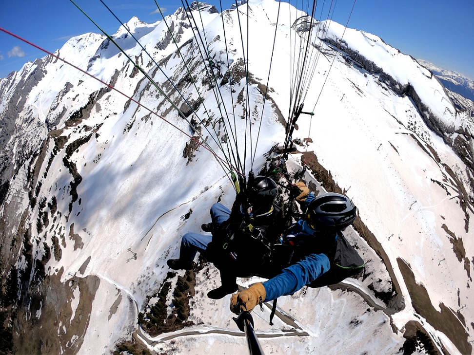

Vol Aiguille : le grand vol d'hiver en parapente à La Clusaz

Vol Aiguille hiver — 160€
Vivez l'adrénaline d'un vol en parapente au départ d'un sommet enneigé, accessible uniquement à ski. Avec 1200 m de dénivelé et environ un quart d'heure dans les airs, c'est notre plus grand vol d'hiver : un survol spectaculaire de La Clusaz et de la chaîne des Aravis sous la neige. Ce vol est réservé aux personnes à l'aise en ski hors-piste.
- Prix : 160€
- Durée du vol : environ 15 minutes
- Dénivelé : 1200 m
- Public : enfants et adultes à l'aise en hors-piste (niveau requis)
- Période : hiver uniquement
- Moment de la journée : matin et après-midi
- Options : photos et vidéo (25€), option sensation (15€)
Paiement sur place ou par chèque (encaissé après le vol).
Comment se déroule le vol Aiguille ?
- Rendez-vous : nous fixons ensemble l'heure et le lieu de rendez-vous lors de la confirmation du vol, selon la météo.
- Accès au décollage : le décollage n'est accessible qu'à ski, par un passage hors-piste. C'est pourquoi un bon niveau de ski est indispensable.
- Préparation : votre moniteur, diplômé d'État, vous équipe et vous explique simplement les quelques pas de glisse du décollage. Vous gardez vos skis aux pieds.
- Le vol : environ 15 minutes au-dessus de La Clusaz, avec une vue dégagée sur les sommets des Aravis. Selon vos envies, le vol peut rester tout en douceur ou devenir plus sportif avec l'option sensation.
- L'atterrissage : retour sur la neige, à ski, 1200 m plus bas.
Pour qui est le vol Aiguille ?
Le vol Aiguille s'adresse aux skieurs confirmés, enfants comme adultes, qui veulent une vraie expérience de vol : un décollage depuis un sommet, du temps pour profiter du paysage et un dénivelé parmi les plus importants du massif. Il faut être à l'aise en hors-piste pour rejoindre le décollage.
Vous débutez à ski ou vous préférez un vol plus court ? Nos autres formules d'hiver sont accessibles depuis les pistes : L'Aiglon, Beauregard ou Crêt du Loup.
Que prévoir pour votre vol ?
- Votre équipement de ski habituel
- Une tenue chaude : 15 minutes en altitude l'hiver, ça rafraîchit. Prévoyez veste, gants et masque ou lunettes de soleil
- Un peu de souplesse sur l'horaire : le créneau peut être ajusté selon la météo du jour
Questions fréquentes sur le vol Aiguille
Quel niveau de ski faut-il avoir ?
Il faut être à l'aise en hors-piste : le décollage n'est accessible qu'à ski, hors des pistes balisées. En cas de doute sur votre niveau, appelez-nous avant de réserver.
Les enfants peuvent-ils faire ce vol ?
Oui, s'ils ont le niveau de ski hors-piste nécessaire. Comme pour tous nos vols, le poids et les conditions météo sont aussi pris en compte.
Peut-on avoir la vidéo du vol ?
Oui, avec l'option photos et vidéo à 25€.
Que se passe-t-il en cas de mauvais temps ?
Si le vent, la visibilité ou les conditions ne permettent pas de voler en sécurité, le vol est reporté ou annulé. Nous vous recontactons pour trouver un autre créneau.
Peut-on offrir ce vol ?
Oui, le bon cadeau du vol Aiguille est téléchargeable en PDF, prêt à imprimer.
Volez virtuellement au-dessus des Aravis
En attendant votre vol, découvrez le massif dans notre jeu 3D de parapente gratuit. Le jeu est une fiction qui ne reflète pas le vol réel.
Voir toutes nos formules
Découvrez l'ensemble de nos baptêmes de parapente biplace, été comme hiver, sur notre page Vols / Bon cadeau, ou contactez-nous directement pour être conseillé sur la formule la plus adaptée : Sam Porret, 06 88 07 04 72 ou Julien Wirtz, 06 82 95 85 42.